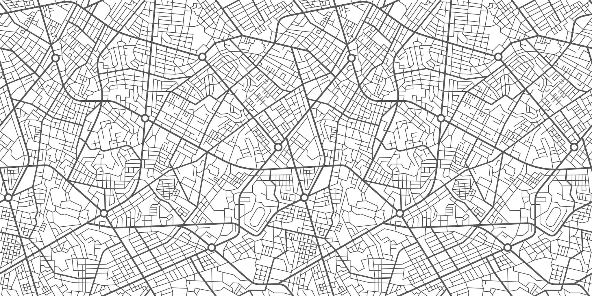

Wirkkette EMS – Produkteinführung
Neubau & Modernisierung · IST-Situation · Prozess wählen, dann Station anklicken oder ← → nutzen

Farbige Spuren = Prozesse · graue Strassen = Abzweigungen und Querverbindungen · Stationen mit mehreren Prozessen sind Kreuzungen.